测量其实就是把一个对象的特性数字化——然后数学才能粉墨登场。测量使得人们可以比较不同的事物。而在做这些之前，人们首先需要统一单位。
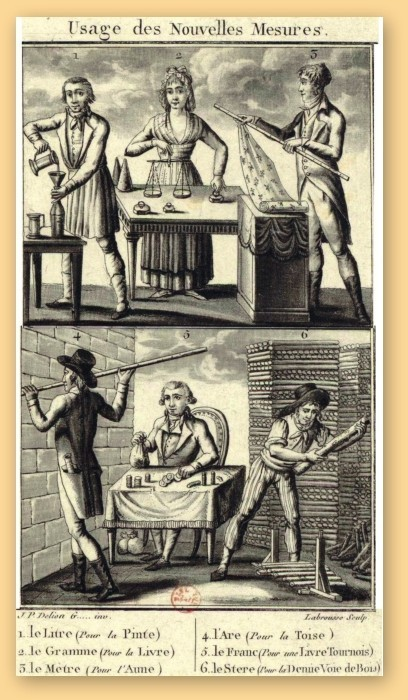
19世纪初，新的国际单位制由一本小册子引入法国。
日常生活中人们遇到很多的问题：现在的位置距离一家商店有多远？一次远足需要带多少水？这个包裹有多重？答案都很容易得到——人们只要去测量相应的距离、体积和质量即可。测量出来的数值就是问题的答案。商店在0.5英里（0.8千米）之外——于是可以步行到达。瓶子能容纳1升的液体——估计这么多水足够旅行。包裹差不多两块石头那么重——这就需要花费昂贵的运费。但是，也许你已经意识到，并不是所有这些计量单位你都理解：何为1英里，多少水达到1升的量，以及一块石头到底有多重呢？
单位制
只有统一了单位制，测量才有用。当今世界有两种单位制并存：一种是美国的英制单位制，这是从几个世纪前的罗马沿袭下来的；另一种是国际单位制，现在几乎在其他所有地方或多或少地被使用，国际单位制是17世纪和18世纪在欧洲发展起来的。
国际单位制
所有现代测量都基于7个基本单位（如右表所示）。它们被称为SI单位，为“Système Internationale”（国际单位制）一词的缩写。所有其他单位都是由这7个单位导出的。例如，1英寸等于0.0254米。下面列出了科技工作中常使用的其他专用单位，它们都是由国际单位制的基本单位组合导出的。
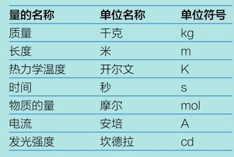
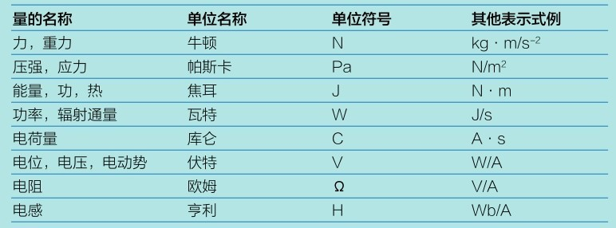
设定标准
两种体系有各自的长度单位、质量单位和体积单位，而且都精细定义以保证测量结果与测量场所无关。现代单位运用了最先进的标准化技术，但是在这之前，人们是如何标准化的呢？
利用身体部位
测量基本上就是比较事物的尺寸或量级。一位史前人类可能通过与他或她的手的宽度相比较来丈量一根棍子或一个骨头工具，然后他们可以用这根棍子去测量动物的长度或树干的高度。这种方式近乎完美，直到有人用他们的手来测量东西，得到不同的答案，人们才开始意识到统一单位的重要性。我们已知的最早的测量体系来自古埃及、美索不达米亚和印度河流域（在现在的印度北部和巴基斯坦），这种体系建立在身体部位的基础上，如人的手、手指、手臂和脚。后来，统治者们设定了一个标准单位，以保证田地的丈量更为精准和公平。
施塔迪翁
古希腊人测量长度的单位，为运动跑道的长度。1施塔迪翁相当于600希腊英尺长。
英寸
在英格兰和威尔士，1英寸规定为3颗首尾相接的大麦粒的长度。
码
据说英格兰的亨利一世国王钦定他的手臂长度为1码。
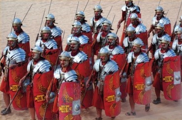
英里
1罗马英里是5000罗马英尺，和士兵行军时1000步（左右脚各跨一步为1步）所走过的距离相等。
腕尺
最有名的例子是埃及的腕尺，1腕尺表示从中指的顶端到手肘之间的距离，这大概是7个掌尺的宽度，即7个手掌的宽度。每个掌尺又分为4个指尺，即4个手指头（不算大拇指)的宽度。也就是说，1腕尺等于28个手指头的宽度。事实上，手指、手掌和手臂都只能做非常粗略的测量，而埃及法老的官员们用一种石质或木质的小棍来丈量，其长度恰好与当权者中指的顶端到手肘之间的距离一致，此即为标准的1腕尺。
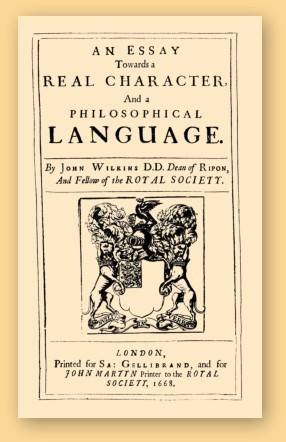
约翰·威尔金斯在其巨著《关于真实符号和哲学语言的论文》中最早提议计量体系应运用十进制换算。
单位换算
利用下表中的比率关系，人们通过简单的计算就能进行单位间的换算。
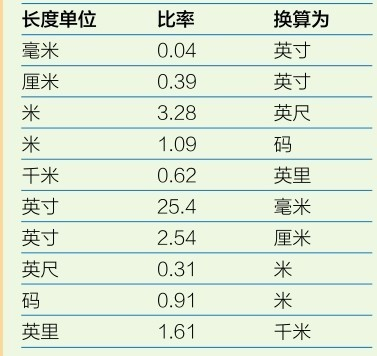
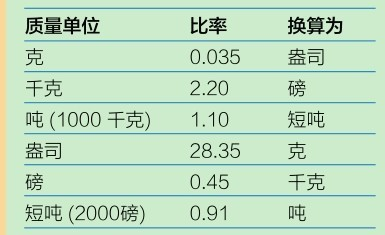
英尺与英寸
多个世纪之后，古希腊人和古罗马人仍然沿用古埃及人发明的腕尺，但他们更常用的是一个更小的单位——英尺。1英尺大概是4个手掌的宽度，亦即16个手指的宽度。古罗马人把1英尺再细分为12份，1份称为1古罗马英寸（“uncia”，见第28页），之后这个词慢慢转变为英文中的“inch”（英寸）。英尺、英寸和之后的英里（见第124页）这些长度单位由罗马传遍欧洲。罗马帝国陨落之后，这些长度单位仍继续被沿用，但是，人们也开始使用一些新的度量单位。经常同一个国家的人会同时使用几种不同的单位，直至后来一些单位之间根本无法换算，而带来诸多不便。比如，最早来到北美的欧洲殖民者习惯使用旧的英国度量单位。但1824年，英国自己重新定义了这些单位，得到新的帝国单位制度，而美国仍然继续沿用旧制。1668年，一位英国主教约翰·威尔金斯提出一种通用的计量体系，以供各国使用，因其单位间的换算基于十进制系统而易于被人理解并接受。
新体系的产生
威尔金斯的想法最终演化成现代的度量体系。法国于1799年最先接纳了这种新的度量体系，这发生在推翻君主制的法国大革命之后数年。新成立的法国政府苦
18世纪90年代，人们对通过巴黎的地球子午线上从法国敦刻尔克一处高塔至巴塞罗那另一高塔（现属西班牙）之间的距离进行了测量，并用这个结果计算整条子午线的全长，即为4000万米。
于难以稳定社会秩序，而其中最大的问题之一是因度量单位不统一引发的混乱。质量单位的不统一使得商人能够偷斤少两欺骗顾客，因此最容易引发社会矛盾。
地球的形状
在利用地球子午线长度定义米这个单位之前，科学家们已经对地球的形状有了大致的估计。法国科学家认为地球的自转使得其在两极隆起，像一个柠檬。英国科学家认为地球应该更像一个橘子，是在赤道一圈上凸起。直到18世纪30年代，研究人员测量了赤道圈以及北极附近地面曲线的长度后，人们才得以确定地球是在赤道处略鼓的不规则球体。
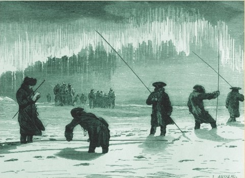
勘测员无惧拉普兰德的寒冷，坚持工作，考察地球的形状。
磅和盎司
正如长度单位最早基于手掌和手臂的长度，而质量单位最早来源于食物的质量，主要是一些种子的质量，如小麦、大麦和角豆。贵金属和珠宝可以用一些种子来衡量质量。为此，我们仍然使用克拉这个单位去量度这些东西，而1克拉最初即表示1颗角豆种子的质量。罗马人规定1金衡盎司等于144克拉，1磅（libra）等于12金衡盎司。“libra”这个词后来被翻译成德语和英语为“pound”，翻译成法语为“livre”（里弗）。这样，多种版本的“磅”单位用于称量硬币、食物和矿物质。而国际单位制需统一一个单位来称量出所有这些东西的质量。
关于长度单位米
国际单位制中，长度单位是米。1米定义为通过巴黎的地球子午线上一小段的长度。设定之后，地球大圆圆周上的这一段劣弧就被用于测量子午线长，即为4000万米。另外，1米又可以转换成100厘米或1000毫米。长距离可以用1000个1米的长度来描述。1000个1米后来称为1千米。公亩是一种常见非法定计量单位，它表示100平方米。目前，人们更倾向于使用公顷作为单位（10公亩）。
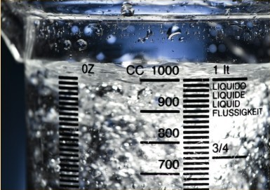
根据国际单位制，1千克水恰好装满一个1升的容器。
容积与质量
国际单位制中，容积的标准单位是升。升也是用米来定义的。1升相当于1000立方厘米，即等于每个边长都是10厘米的立方块的体积。质量的单位是克，也是用米定义的。1克相当于1毫升纯净水的质量。因此，1升纯净水重1000克，即1千克。
节
船速是用节作为单位的。1节等于1海里每小时，而1海里的量值基于地球子午线的弧长。将地球子午线一圈等分成360度，每度再细分成60分，1分弧的长度为1海里。因此，如果沿着赤道以1节的速度航行（假设地球整个被海洋覆盖），走完全程将需要900天。
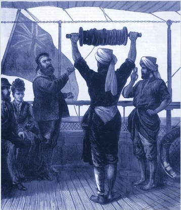
“节”一词来源于测算船速的一种古老方法。把一块测程仪（如左图）投入水中，板上系着一根长绳，等距离打着结，一头拴在船尾。当船航行时，绳子会因阻力而部分漂上海面，船速越快，漂上海面的部分就越长。水手根据露出水面的绳结的数量来测算航速。
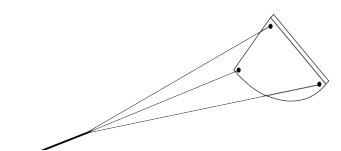
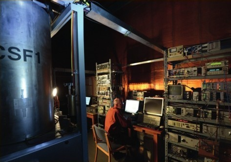
时间由一台原子钟来度量，通过检测铯原子的跃迁频率控制钟的走动。
现代标准度量单位
直到20世纪60年代，表征米的量值的基准器——一根铂杆才被制造出来并存放于巴黎。（还有一个表征千克的量值的原器最早用铂铱合金制成，由于使用过程中的磨损，它的质量正慢慢地减少，基本单位的准确性受到影响，误差越来越大。目前新的原器是一个纯硅的近似球体。）从20世纪60年代开始，计量学家——关注测量问题的科学家——开始着手于用光来定义米的量值。最新的1米定义为1/299 792 458秒的时间间隔内光在真空中的行程。啊，等一下！秒同样是国际单位制中的一个基本度量单位。
时间单位
人类文明开始之初，人们就利用天体运动规律计时。一个月大概就是两次满月之间的时间，而一年就是地球绕太阳一周所需要的时间。然而，古人还不知晓这些，他们通过观察星星的位置计时。比如，古埃及人将每年夏天天狼星在日出前出现的那天定为元旦日（恰巧略早于一年一度尼罗河的汛期）。最易理解的时间单位是日，即两次日出的时间间隔。古埃及人将白天分为10小时，再加上黎明和黄昏各1小时，就得到我们现在惯用的12小时。埃及处于热带地区，白天和夜晚时长基本相同，因此，他们将夜晚也均分成12小时。而1小时分为60分钟的想法得益于巴比伦人（见第18页），之后，人们又把1分钟分为60秒，把1秒继续60等分，然后再60等分。今时今日，秒已经是国际单位制中的基本时间单位，并以十进制来细分小数点以下的时间。目前，秒的量值用极低温度下铯原子的活性来定义。原子每隔一段时间吸收与释放能量，而铯原子基态的两个超精细结构能级之间跃迁相对应辐射的9 192 631 770倍所持续的时间定义为1秒。
参见：
▶数字系统，第16页
▶乘方，第76页
▶取模运算，第142页